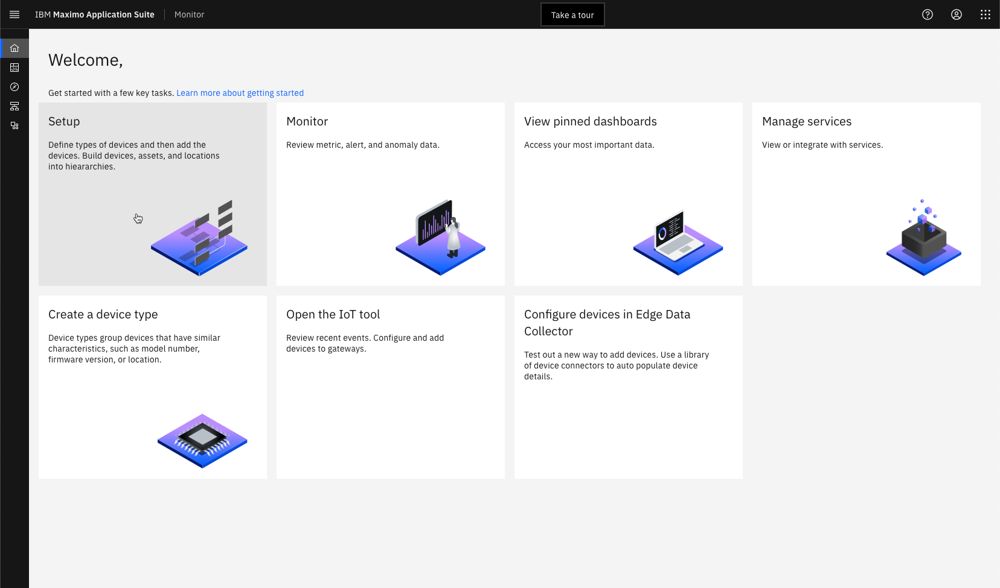

Objectives
In this Exercise you will learn how to:
- create the metrics for the devices in Monitor
Now the data is being collected at the edge, unified and send to the IoT Tool in Maximo Monitor. You need to define the metrics on the device type level in Maximo Monitor in order to store the selected data in the Maximo Monitor database and make it available for further analysis and visualization.
Before you begin:
This Exercise requires that you have:
- completed the pre-requisites required for all labs
- completed the previous exercises
Navigate to Setup from the Monitor Home page: 
Select Devices:

Search for the VariableFrequencyDrives device type and click on Set up device type:

No metrics are available. Click on Identity:
Click on Add metric:

Click on Add metric:

Enter motor_voltage_volt as the Metric, Motor_Voltage as the Display name, status as the Event, NUMBER as the Type, and V as the Unit.
Click on Add metric:
Add the following metrics
and click Add.
Tip
Here are the Metric names you need to use, as they are delivered by the EDC edge:
motor_voltage_volt
motor_current_ampere
motor_torque_percent
dc_bus_voltage_volt
output_frequency_hertz
timestamp
Attention
Be aware that the Event name and the Metric names are case sensitive - and all in small letters.
Click on the toggle to the left of status.
Select the Use this as the default timestamp so you use the timestamp provided from the devices rather than from the time of the data injection. Click Save:
Finally, you will verify that the data is available for Monitor analytics and dashboards.
Wait a couple of minnutes for newly received data points to be stored in Maximo Monitor.
Click on the Data tab.
Expand Metric. Select Motor_Current and Data table:
Congratulations you have successfully:
- setup a couple of simulated Lenze i500 variable frequency drives
- created the needed gateway in the IoT Tool and device type in Monitor
- created an Edge Data Collector Integration by defining endpoint, devices and their tags (metrics)
- deployed the EDC Integration on an EDC Edge and the device data has been collected, unified and send to Maximo Monitor
- received the unified data in the IoT Tool and selected a subset of the metrics to be stored in the Maximo Monitor database to be available for further analysis and visualization, like the example below: